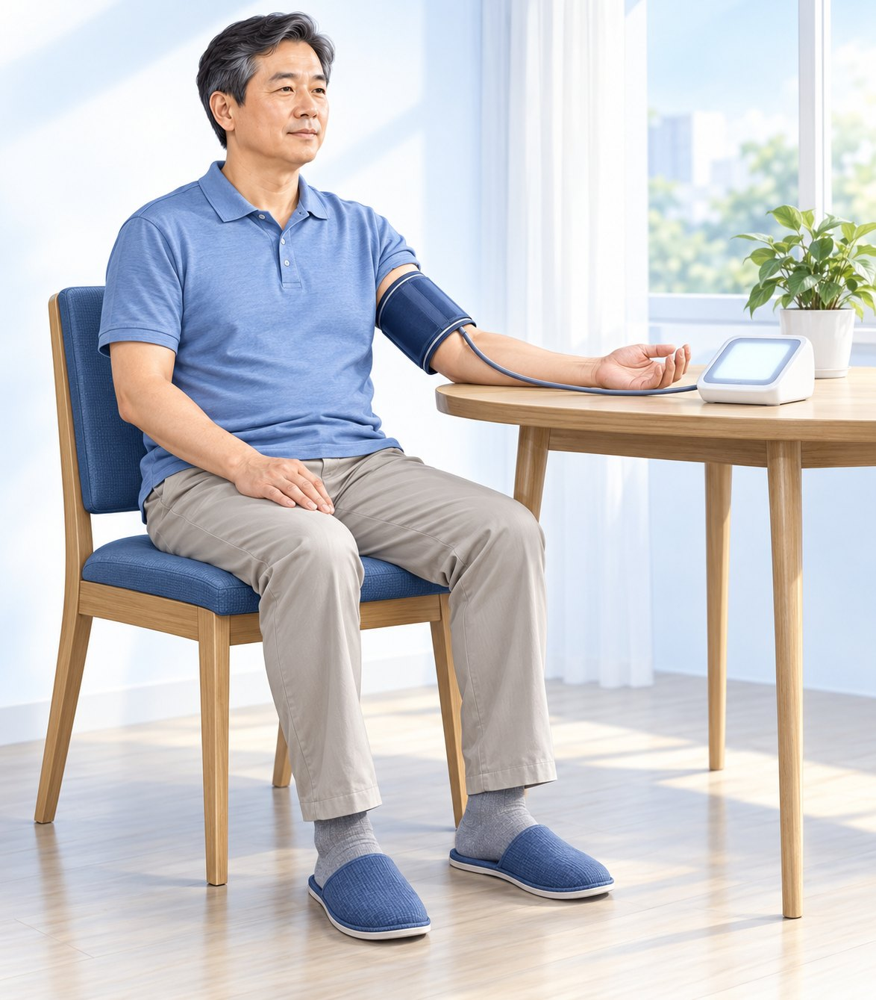

병원에는 가끔 오지만 사는 곳은 집입니다. 그래서 집에서 잰 평소 혈압이 약을 정하는 중요한 기준입니다.
① 언제 재나요 — 하루 두 번
아침
저녁
일어나서 1시간 안, 소변을 본 뒤, 아침 식사와 혈압약 먹기 전
잠자리에 들기 전 1시간 안 — 아침과 같은 방법으로 잽니다
② 어떻게 재나요 — 앉아서 5분 쉬고 2번

1재기 30분 전부터 담배·술·커피·운동·목욕은 피합니다
2등받이 의자에 앉아 다리를 꼬지 않고 발바닥을 바닥에 붙입니다
3팔은 탁자 위에. 팔에 감는 띠(커프)는 맨 팔(얇은 옷은 괜찮음)에 심장 높이로, 아래 끝이 팔꿈치 접히는 곳보다 2~3cm 위
45분 쉬고, 1분 간격으로 2번 재고 두 번 다 적습니다. 재는 동안 말하지 않습니다
5위팔에 감는 자동혈압계로(손목·손가락형은 피하기)
③ 며칠 재나요 · ④ 어떤 숫자가 기준인가요
7일 재세요 — 바쁘면 적어도 5일. 며칠을 재든 첫날은 연습으로 빼고 2일째부터 평균을 봅니다.
고혈압 기준
진료실에서 잴 때
집에서 잴 때
이 숫자 이상위·아래 중 하나라도
140/90mmHg
135/85mmHg
이럴 땐
진료실에서만 높으면 집 혈압으로 판단
진료실이 정상이어도 집에서 넘으면 알려 주세요
PATIENT CARD · 7-DAY BP LOG
7일 혈압 기록표
잰 숫자는 골라 적지 말고 모두 적어 진료 때 가져오세요(혈압계 저장 기록도).
⑤ 기록표 — 한 칸에 위/아래 숫자(예: 128/82)
며칠째
날짜
아침 1번째
아침 2번째
저녁 1번째
저녁 2번째
1일째 (연습)
/
/
/
/
2일째
/
/
/
/
3일째
/
/
/
/
4일째
/
/
/
/
5일째
/
/
/
/
6일째
/
/
/
/
7일째
/
/
/
/
2~7일째 평균 ____ / ____ mmHg (어려우면 비워 오세요) · 메모:
⑥ 진료실에서만 높을 때 약을 바로 안 쓰는 이유
진료실 — 긴장해 높게집 — 평소 혈압
안경은 시력을 정확히 잰 뒤에 도수를 맞추지요. 혈압약도 집에서 잰 평소 혈압을 기준으로 봅니다. 병원에서만 높은데 약을 쓰면 집에서는 혈압이 너무떨어질 수 있습니다.
혈압약을 드시는 분은 집 혈압이 낮아도 약을 스스로 끊거나 줄이지 마세요(어지러우면 연락). 위 숫자가 180을 넘거나 아래 숫자가 120을 넘으면 1분 뒤 다시 재고, 그래도 넘으면 증상이 없어도 바로 병원에 연락하세요. 이때 가슴 통증·숨참·등 통증·저림·시야 변화가 있으면 바로 119. 얼굴 한쪽 처짐·한쪽 팔다리 힘 빠짐·말이 어눌함은 혈압 숫자와 관계없이 바로 119.
 ① 언제 재나요 — 하루 두 번
① 언제 재나요 — 하루 두 번